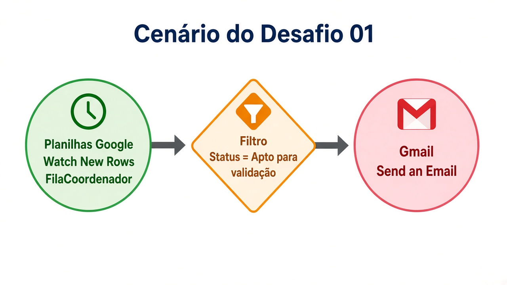
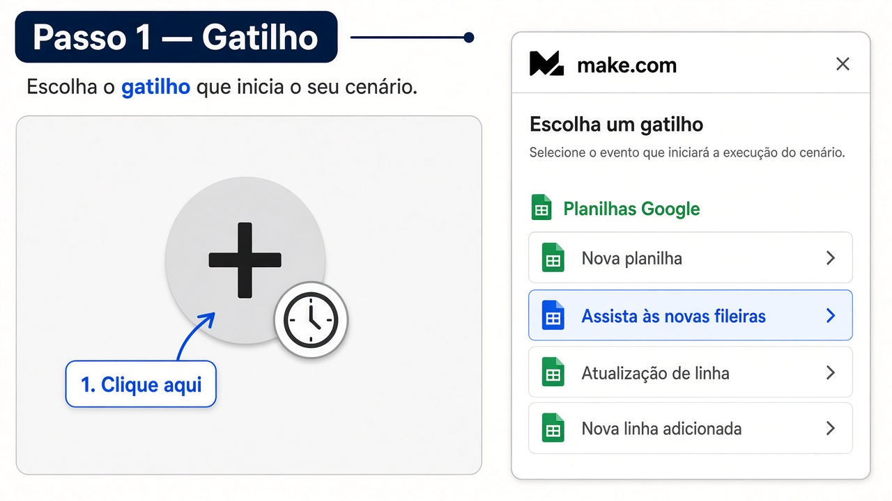
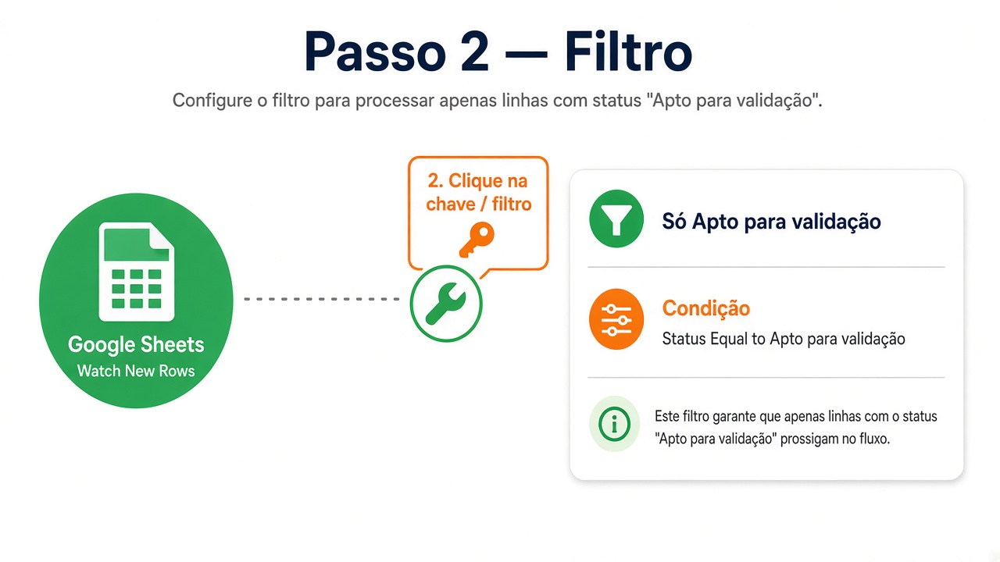
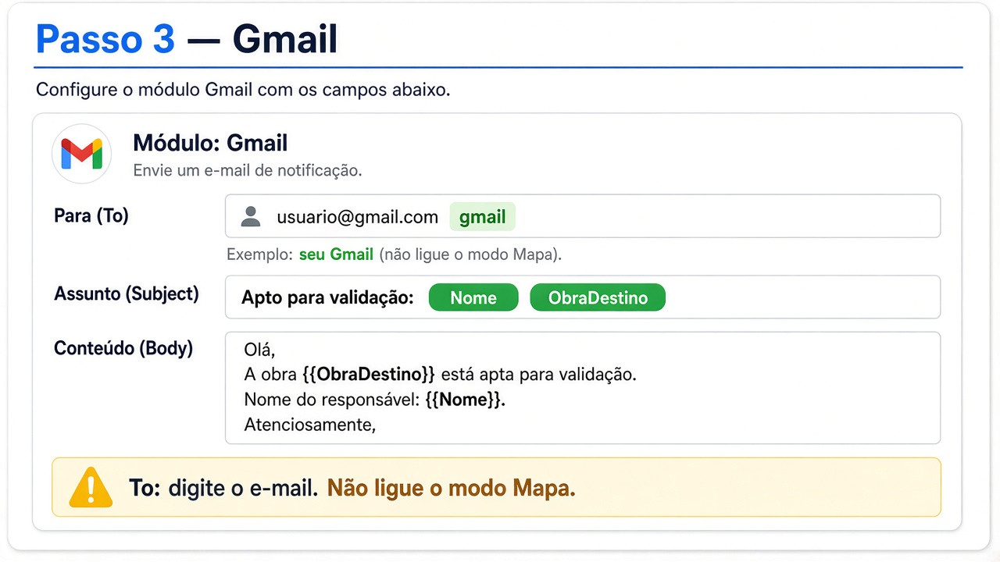
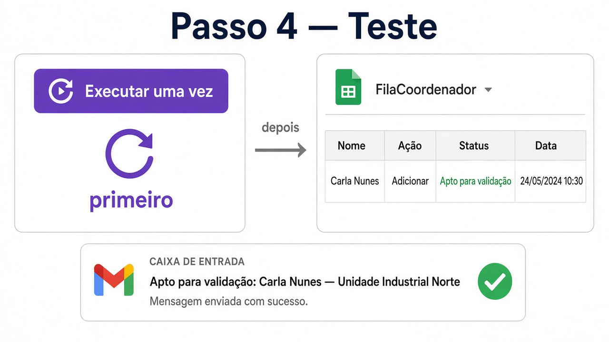

Desafio 01 · Manutenção Guarás
Deixe esta página aberta ao lado do Make. Faça um passo, confira a imagem, só depois avance.

Só estes 3 pedaços (nada de aba Avisos):
FilaCoordenadorApto para validação
Aviso ao coordenador quando fica AptoGuaras-Controle-de-mobilizacoesFilaCoordenador
Só Apto para validaçãoStatus → Equal to / igual a → digite exatamente:Apto para validação (com acento)Salve o filtro.

Apto para validação: + clique em Nome + digite — + clique em ObraDestino
Corpo do e-mail (copie e mapeie Nome, Matricula, Funcao, ObraDestino, Status, Treinamento1, T1, etc.):
A solicitação ficou pronta para a sua validação. Nome: (campo Nome) Matrícula: (campo Matricula) Função: (campo Funcao) Obra: (campo ObraDestino) Estado: (campo Status) Treinamentos: - (Treinamento1): (T1) - (Treinamento2): (T2) - (Treinamento3): (T3) Pode validar sem abrir a planilha geral no horário de costume.
Salvar o Gmail → Salvar o cenário.

FilaCoordenador, na primeira linha vazia:| Coluna | Valor |
|---|---|
| ID | 2 (ou o próximo número livre) |
| DataEntradaFila | data e hora de agora |
| Nome | Carla Nunes |
| Matricula | 4601 |
| Funcao | Eletricista |
| ObraDestino | Unidade Industrial Norte |
| Status | Apto para validação |
| Treinamentos | iguais ao Rafael, todos Válido |
Apto para validação: Carla Nunes — Unidade Industrial NorteNão faça no vídeo: não mostre senha, não ligue outros módulos, não automatize o processo inteiro. Uma linha nova na fila + um e-mail = prova do gargalo.